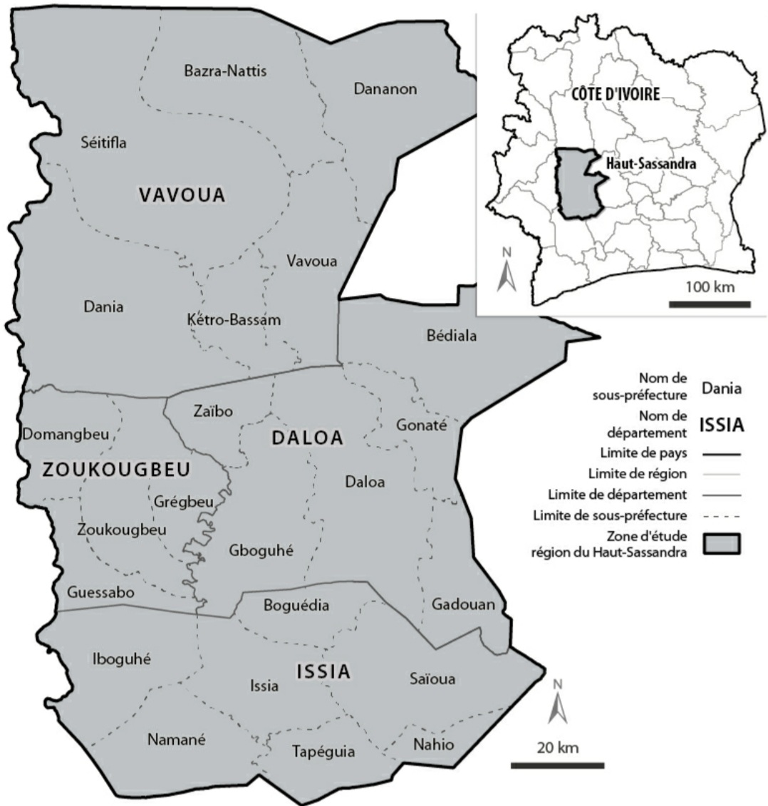
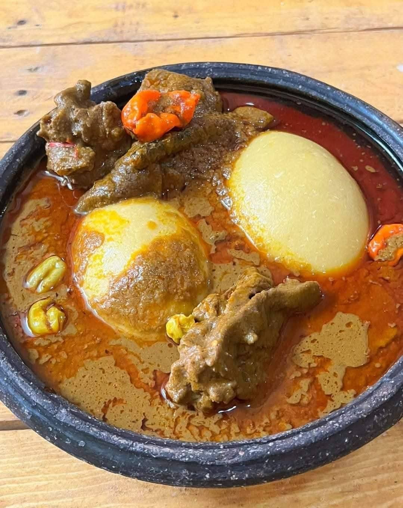
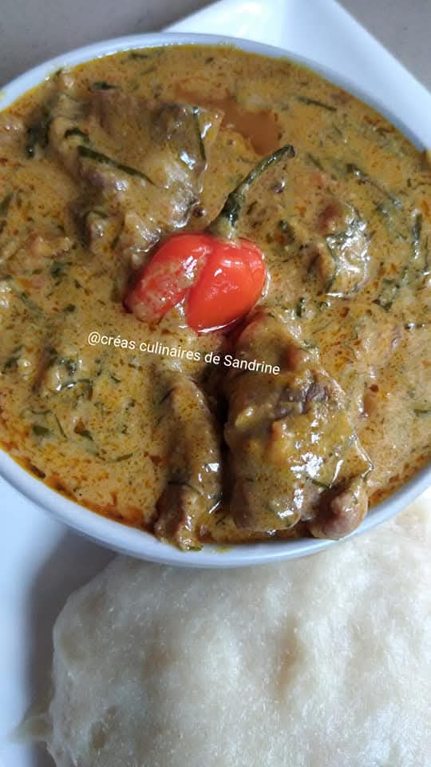
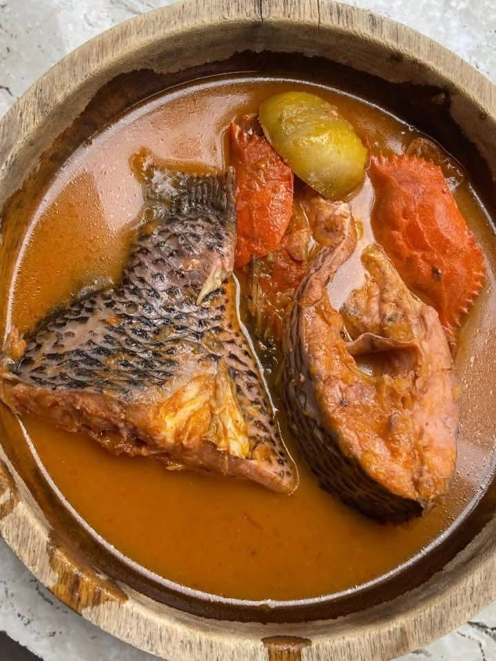

LE REVEIL SOKYA
CULTURE ET TRADICTONS DES PEUPLES SOKYA


LA SITUATION GEOGRAPHIQUE DES SOKYA
connaitre les villages du peuple sokya.
LOCALITEELOCALITEE
Située dans le centre-ouest de la Côte d’Ivoire, la commune de Vavoua est le chef-lieu du département de Vavoua, dans la région du Haut-Sassandra. La commune de Vavoua compte environ 132 528 habitants. La population est composée en majorité d’autochtones mais avec une part importante d’allochtones et d’allogènes estimée entre 35 et 40 %. Le territoire est subdivisé en plusieurs cantons : les Sétis vers l’ouest du côté de Man, les Natis au nord vers Séguéla, les Brono-Gotron à l’est, les Gnandeboa au sud-ouest entre Daloa et Pélézi, et les Sokya répartis au sud, à l’est et à l’ouest de Vavoua. Les Sokya sont localisés sur les axes Daloa–Vavoua, Zuénoula–Vavoua et Pélézi–Vavoua, tandis que les Gouros occupent les cantons Sétis, Natis et Brono-Gotron. Les Gnandeboa se situent entre Daloa et Pélézi. Administrativement, le département comprend trois sous-préfectures fonctionnelles (Vavoua, Seïtifla et Dania), tandis que celles de Dananon, Bazra-Natis et Kétro-Bassam ne disposent pas encore d’administrateurs.
Nombres de village
Sokya : Tribu du groupe ethnique Kru de Côte d'Ivoire, vivant à Vavoua dans la Région du Haut Sassandra. Les Sokya sont répartis dans plusieurs villages, notamment :
- Bonoufla "Bolouyabli"
- Bahoulifla "Gbalablé"
- Déma "Bhêlêblé"
- Sébouafla "Totozôô"
- Bouhitafla "Gbêwo"
- Gatifla"Gahati"
- Gouabafla "Gouablé"
- Dédiafla "Lèri"
- Brouafla Kouya
- Kétro-Bassam
- Kétro
- Kouleyo "koulabli"
- Danzerville (SIFCI)
- Vavoua "vafou"
Nombres de sous sous-préfectures
Les Sokya sont principalement situés dans le département de Vavoua, qui fait partie de la région du Haut-Sassandra.
les principales sous-préfectures ou vivent les sokya sont:
- Vavoua
- Kétro-Bassam...

Population
La population des Sokya est estimée à environ 63 480 habitants, répartis dans plusieurs villages et localités. Le tableau ci-dessous présente la population des villages Sokya dans le département de Vavoua. Sur une population totale de 126 860 habitants, 63 430 sont autochtones, l’autre moitié étant constituée d’étrangers.
| village | Nombres d'habitants |
|---|---|
| Bonoufla | 10 800 environ |
| Bahoulifla | 8 330 environ |
| Déma | 4 500 environ |
| Sébouafla | 3 200 environ |
| Bouhitafla | 1 570 environ |
| Gatifla | 1 400 environ |
| Gouabafla | 3 000 environ |
| Dédiafla | 4 532 environ |
| Brouafla | 2 230 environ |
| Kétro-Bassam | 5 300 environ |
| Kétro | 3 600 environ |
| Kouleyo | 2000 environ |
| Danzerville | 300 environ |
| Vavoua | 20 000 environ | total | 63 480 environ |
la jeunesse de ketro-bassam

Culture
La culture des Sokya est riche et diversifiée, avec des traditions qui se transmettent de génération en génération. Voici quelques aspects clés de leur culture :
Danse
chant
La majorité des Sokya pratiquent l'islam, bien que certaines communautés conservent des croyances traditionnelles et animistes. Les pratiques religieuses jouent un rôle important dans la vie sociale et culturelle des Sokya.
Vêtements traditionnels
Les Sokya portent des vêtements traditionnels colorés, souvent fabriqués à partir de tissus locaux. Les hommes portent généralement des boubous et des pagnes, tandis que les femmes portent des robes longues et des foulards.
Gastronomie
La musique et la danse occupent une place centrale dans la culture sokya. Les instruments traditionnels incluent les tambours, les flûtes et les xylophones. Les danses sont souvent exécutées lors de cérémonies, de fêtes et de célébrations communautaires.
site touristique
Les Sokya sont réputés pour leur artisanat, notamment la fabrication de poteries, de tissages et de bijoux. Ces objets artisanaux sont souvent utilisés dans la vie quotidienne ou vendus sur les marchés locaux.
Atelier
Apprentissages de la langue sokya
Nous proposons des ateliers d'apprentissage de la langue sokya pour les débutants et les locuteurs avancés. Nos cours couvrent la grammaire, le vocabulaire et la conversation pratique.
cuisine traditionnelle
Participez à nos ateliers de cuisine traditionnelle sokya pour découvrir les recettes authentiques et les techniques culinaires utilisées par les Sokya. Apprenez à préparer des plats typiques tels que le ndolé, le poulet yassa et le poisson braisé.
Nom des plat culinaires
| Nom des plats en sokya | Descriptiuon en français | image du plat |
|---|---|---|
| guéssi souké ya guzegni | manioc banane non muire avec sauce graine |  |
| piétai souké ya bai zapouh | foutou banane sauce arachide |  |
| gaza baibai gnou | soupe de cap |  |
la numerologie
Découvrez la numérologie sokya et son importance dans la culture et les traditions des Sokya. Apprenez comment les nombres sont utilisés pour prendre des décisions, planifier des événements et interpréter les rêves.
- 1 - Unité
- 2 - Dualité
- 3 - Harmonie
- 4 - Stabilité
- 5 - Changement...
l'hommes et la nature
Explorez la relation entre l'homme et la nature dans la culture sokya. Apprenez comment les Sokya respectent et protègent leur environnement à travers des pratiques agricoles durables, la chasse responsable et la gestion des ressources naturelles.
composition sociale des sokya:
- le chef de village
- les anciens
- les guerriers
- les artisans
- les agriculteurs...
le sokya en groupe di
la famille
la famille est composée de :
- le pere
- la mere
- les enfants
- les grand parents
- les oncles et tantes...
les metiers
les metiers les plus courants chez les sokya sont :
- agriculteur
- eleveur
- artisan
- commercant
- enseignant...
les nom de famille en sokya
- Abdoulaye
- Issa
- Mahamat
- Oumarou
- Salim...
La nature
La nature occupe une place centrale dans la culture sokya. Les Sokya vivent en harmonie avec leur environnement, en utilisant les ressources naturelles de manière durable et respectueuse. Ils pratiquent l'agriculture de subsistance, la chasse et la pêche, tout en préservant les écosystèmes locaux.
le climat
Le climat dans la région où vivent les Sokya est généralement chaud et sec, avec une saison des pluies et une saison sèche. Les Sokya ont développé des techniques agricoles adaptées à ces conditions climatiques, telles que la culture en terrasses et l'irrigation.
- la saison des pluies
- la saison sèche
- les plantes médicinales
- les animaux sauvages
- les ressources naturelles...
les jours de semaine
- lundi - Lundi
- mardi - Mardi
- mercredi - Mercredi
- jeudi - Jeudi
- vendredi - Vendredi
- samedi - Samedi
- dimanche - Dimanche
Vegetation
La végétation dans la région où vivent les Sokya est principalement composée de savanes, de forêts clairsemées et de zones semi-arides. Les Sokya utilisent les plantes locales pour la médecine traditionnelle, l'alimentation et l'artisanat.
- arbres
- arbustes
- herbes
- plantes médicinales
- cultures agricoles...
Faune
La faune dans la région où vivent les Sokya est diverse, avec de nombreuses espèces d'animaux sauvages. Les Sokya chassent certains animaux pour se nourrir, tout en respectant les règles de conservation et de gestion des ressources fauniques.
- mammifères
- oiseaux
- reptiles
- insectes
- poissons...
les couleures
Les couleurs ont des significations particulières dans la culture sokya. Par exemple, le rouge peut symboliser la force et le courage, tandis que le blanc est souvent associé à la pureté et à la paix. Les Sokya utilisent ces couleurs dans leurs vêtements, leurs décorations et leurs cérémonies.
- rouge - force et courage
- blanc - pureté et paix
- bleu - sérénité et sagesse
- vert - nature et fertilité
- jaune - joie et prospérité...